Інтерфейс середовища програмування
Використовувані сполучення клавіш редактора
Використання точок зупину для налагодження програм
Сповіщення про помилки при виконанні програм
Поширені причини синтаксичних помилок
Налаштування розміру символів редактора та консолі
Кольорова тема оформлення середовища
Обмеження у використанні модулів
Список бібліотек, не реалізованих в Skulpt
Програми з опрацюванням файлів
Приховування логотипу та вкладок файлів
Додавання середовища до сайту або блогу
Розміщення ЄPython на власному хостингу
Сумісність з "класичним" Python
Створення файлів для Галереї ресурсів Pygame Zero
Робота в автономному режимі поза мережею Інтернет
Програмування на Python, відоме своїм простим синтаксисом і динамічною семантикою, протягом останніх років є затребуваним у індустрії програмного забезпечення. Однак для тих, хто тільки починає вивчати програмування, Python може здатися незрозумілим та складним --- і найбільший вплив на це здійснюють середовища розробки програм, які у своїй більшості були створені не для навчання, а для професійної роботи.
ЄPython було створено у 2020 році на кодовій базі проєкту Create With Code, як інструмент для навчання програмуванню на Python для початківців --- учнів та студентів. Його рушійна ідея - зробити програмування простим і доступним, адже використовуючи його:
ЄPython виконує місію демократизації, простоти та інклюзивності програмування, гарантуючи, що кожен, незалежно від свого місцезнаходження, походження та соціального статусу може вивчати програмування на Python.
З ЄPython програмування мовою Python є не просто легким - воно стало доступним будь-де і будь-коли, як за наявності доступу до Інтернету, так і для роботи поза Мережею. Все це привертає увагу до нього багатьох вчителів інформатики та розробників онлайн-курсів програмування на Python.
ЄPython знаходиться у вільному доступі для всіх і кожного з метою розвитку інформатичної освіти та навичок програмування. Використовуйте ЄPython для навчання будь-яким способом, який ви вважаєте доцільним --- ви можете використовувати його онлайн або без доступу до Інтернету, також ви можете розмістити його на власному сайті або імплементувати його у власні навчальні онлайн-ресурси.
Ваша конфіденційність важлива для нас - ЄPython не збирає особисту інформацію, всі користувачі є анонімними, програмний код виконується лише на пристрої користувача.
Усі файли зберігаються лише на пристроях користувача. Копії створених користувачами програм зберігаються також у локальному сховищі вебоглядача (браузера) і можуть бути вилучені користувачем у будь-який час. Ці файли використовуються лише ЄPython.
Create With Code створив Піт Дрінг (програмний код ресурсу).
Модулі p5, tkinter, matplotlib, pgzrun було імплементовано, адаптовано та удосконалено Г.Громком та О.Мізюком.
Адаптивний інтерфейс, модулі requests, bs4 розробив О.Мізюк.
Документація ЄPython була розроблена Г.Громком та О.Мізюком.
Хостинг для розміщення сайту надали В.Заїка та GitHub.
ЄPython базується на таких пакетах програмного забезпечення:
ЄPython використовує шрифт Awesome (ліцензія SIL OFL 1.1).
Торгові марки, назви та знаки Windows, Linux, MacOS, Android, Google згадані лише з інформаційною метою, без жодних комерційних інтересів та застосувань.
Все використане програмне забезпечення та ресурси вільно поширюються за умови їх добропорядного використання.
Код застосунку вільно поширюється на умовах ліцензії MIT.
Глобальна пандемія, карантинні заходи та необхідність у дистанційній освіті викликала потребу у наявності простого та доступного онлайн-середовища програмування - було випробувано близько десятка застосунків, використання яких показало низку проблем:
Саме тому ми звернули увагу на проєкт Create With Code вчителя інформатики зі школи Фулфорд (Північний Йоркшир, Велика Британія) Пітера "Піта" Дрінга з метою підтримки навчання програмуванню мовою Python. Він був започаткований 2018 року, але його привабливість вийшла за межі освіти Британії, адже він спрощує не лише навчання, а й позбавляє необхідності окремо встановлювати Python, що може бути складним для програмістів-початківців. Крім того, для розробників безумовним "плюсом" було те, що його кодова база вільно поширювалась.
Назва "ЄPython" утворилась зі слогану "Є Python --- програмувати просто!" (There is Python - programming is easy!), англійською читається як "YePython" (
ЄPython --- це безкоштовне середовище програмування (Integrated Development Environment, IDE), створене для навчання мові програмування Python. Простий та інтуїтивно зрозумілий інтерфейс ЄPython, відсутність потреби у інсталяції будь-яких додаткових компонентів, надає можливість легкого входу до світу Python, усуваючи складність, яка зазвичай пов'язана з використанням професійних IDE.
Призначення ЄPython:
Простота та зручності використання, що робить зручним інструментом для вивчення програмування програмістами-початківцями, ЄPython не має на меті замінити "класичні" середовища програмування, такі як Thonny, IDLE, PyCharm - це інструмент, який допомагає вчителям та викладачам навчати, а здобувачам знань - вчитися.
Як потрапити до середовища ЄPython:
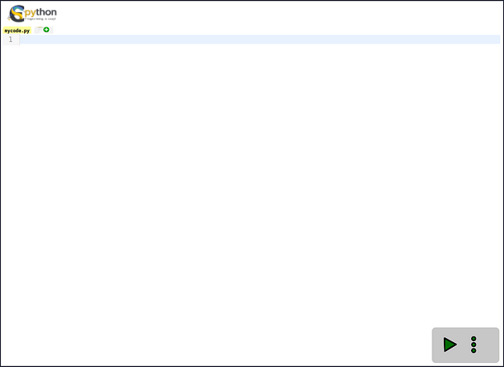
Після запуску ви отримаєте доступ до середовища програмування з мінімалістичним інтерфейсом --- вікном редактора та панеллю керування у нижньому правому куті.
Хочете відчути себе програмістом? Немає нічого простішого --- просто наберіть цей рядок (як на зразку) - print("Привіт, світ!"):
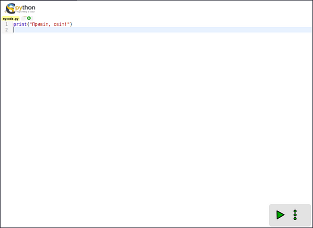
Програмування --- процес створення програми, і одним з його етапів є написання коду (тексту) програми у текстовому редакторі. Після того, як програму написано, її можна виконати --- щоб отримати потрібний результат, або щоб переконатись у її роботі. Для виконання програми натиснемо кнопку "зелений трикутник" на панелі керування:
Якщо все зроблено правильно (текст набрано без помилок) --- отримаєте повідомлення "Привіт, світ!".
Можете себе привітати --- ви створили та запустили на виконання свою першу програму (можливо), написану мовою програмування Python.
Результати виконання програми та сповіщення про можливі помилки виводяться у спеціальному вікні --- консолі.
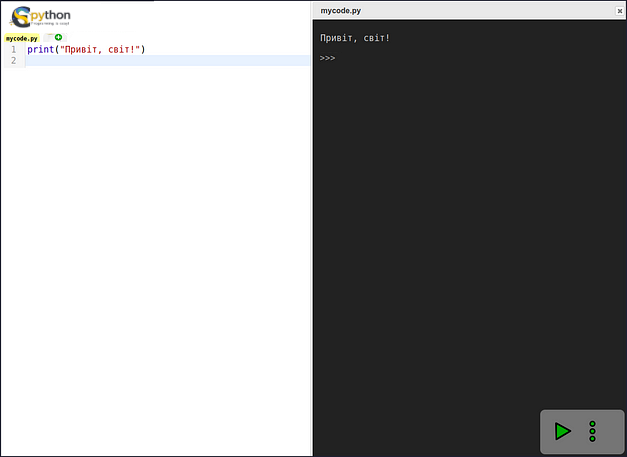
Напис ">>>" сповіщає, що середовище може працювати в інтерактивному режимі, тобто виконання програми, введеної користувачем, вже закінчено або припинено через помилку.
REPL (Read-Evaluate-Print Loop) - це спосіб прямої взаємодії з інтерпретатором Python:
Read - прочитати код, введений користувачем;
Eval --- виконати введений код;
Print --- роздрукувати на екрані результат виконання;
Loop --- знову ввійти в режим очікування введення коду.
Цей режим надає інтерфейс для введення коду та негайного отримання результату, що дозволяє перевіряти код та окремі програмні вказівки, налагоджувати код в режимі реального часу. Перейти в режим REPL можна натиснувши напис REPL>>> .
Закінчити введення інструкції або даних можна натиснувши клавішу Enter або клацнувши вказівником миші по напису OK в кінці рядка введення.
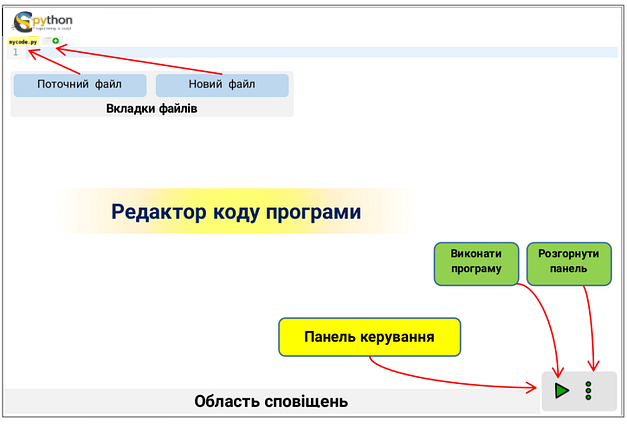
Основним об'єктом, з яким взаємодіє програміст під час створення програми, є вікно редактора коду --- це текстовий редактор, який нумерує рядки коду, "підсвічує" ключові слова різним кольором, автоматично встановлює відступи та надає можливість автодоповнення.
У верхньому лівому куті над вікном редактора знаходяться вкладки файлів, які завантажені до середовища. Перший файл --- файл проєкту, при збереженні файлів використовується його ім'я. За потреби назву проєкту можна перейменувати, клацнувши вказівником миші по вкладці.
Вкладка з "плюсом" (⨁) дозволяє створити новий файл --- це може бути як текст програми на Python, так і файл з текстовими даними, які можуть бути використані у роботі основної програми.
На панелі керування (нижній правий кут) завжди відображаються кнопки "Виконати програму" (зелений трикутник) та "Розгорнути панель" (три вертикальні зелені крапки).
У нижній частині середовища знаходиться область сповіщень --- у ній виводяться повідомлення про можливі дії, про призначення кнопок та про помилки під час виконання програми.
Натиснемо на кнопку ⋮ - розгорнути панель керування.
На панелі з'являться додаткові кнопки:
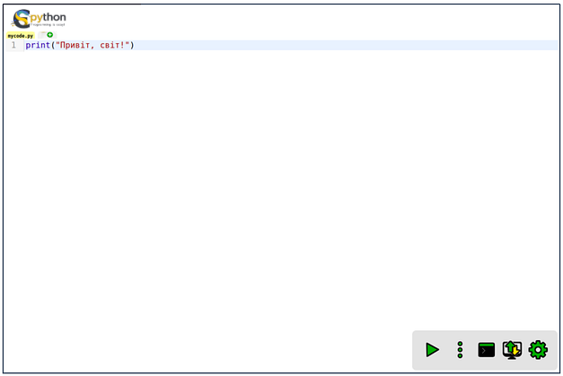
| Кнопка | Опис |
|---|---|
| Виконати програму. Якщо програма виконується тривалий час - з'являється кнопка "Зупинити виконання". | |
| Покрокове виконання програми. Вмикається у "Налаштуваннях". | |
| Зупинити виконання програми. Після зупинки програми її код повернеться до стану перед виконанням. | |
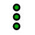 |
Показати або сховати додаткові кнопки на панелі керування. |
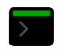 |
Показати вікно відображення результатів роботи програми (консоль). Сховати вікно можна натиснувши кнопку "Закрити" на ньому або натиснути ще раз на цю кнопку. |
| Показати вікно файлів - збереження програми у файл, завантаження файла до редактора, відновлення файлів та додавання зображень до файлів ресурсів. | |
| Показати вікно налаштувань програми. Повторний натиск цієї кнопки закриває всі діалогові вікна програми, окрім вікна редактора. |
Всі діалогові вікна, які відкриваються при обранні відповідного режиму в панелі керування, можна закрити за допомогою кнопки "Закрити" (х) у верхньому правому куті діалогового вікна, або повторним натисканням на ту ж саму кнопку на панелі керування (це працює у Android, де кнопка "Закрити" може не функціонувати).
Редактор коду є основним інструментом для розробки програм, він надає зручне середовище для написання і редагування коду. У редакторі коду забезпечується автоматична нумерація рядків, "підсвічування" (виділення різним кольором) синтаксису, автодоповнення коду та інші функції, що спрощують і прискорюють процес програмування.
ЄPython має редактор коду, створений на основі Code Mirror, який разом з Ace Editor, є типовим для більшості онлайн-середовищ розробки програм. Він легкий та простий у використанні, надає можливості прямого редагування коду, використовується для швидких виправлень. Середовище надає можливість одночасного редагування декількох файлів, доступ до яких здійснюється за допомогою вкладок.
Зовнішній вигляд редактора (кольорове оформлення та шрифти) може бути налаштовано через інструмент "Налаштування".
Підсвічування синтаксису допомагає уникнути багатьох помилок під час набирання коду програми.
Виділяються кольором:
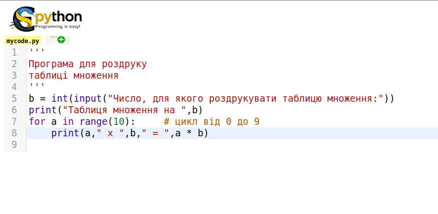
Колір виділення залежить від обраної у "Налаштуваннях" кольорової теми редактора:
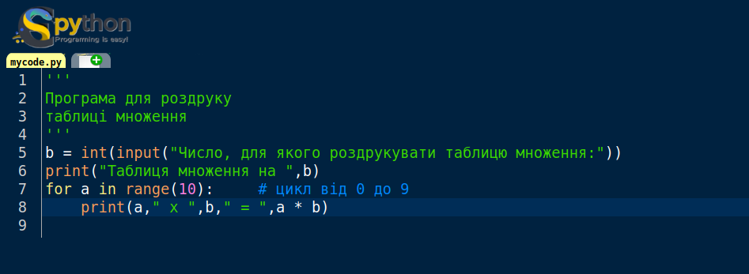
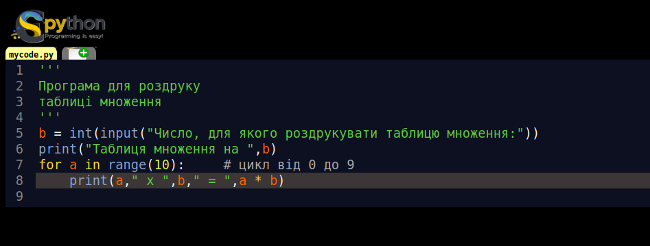
Редактор ЄPython автоматично встановлює відступи відповідно до правил мови програмування Python. Розмір відступу - 4 пропуски, такий самий відступ встановлюється за допомогою клавіші Tab. Символ табуляції не вставляється.
При копіюванні тексту із зовнішніх джерел, сформованих за допомогою текстових редакторів, можуть виникати помилки, пов'язані з відступами, які сформовані за допомогою символів табуляції, для виправлення необхідно замінити відступи на сформовані з 4 пропусків.
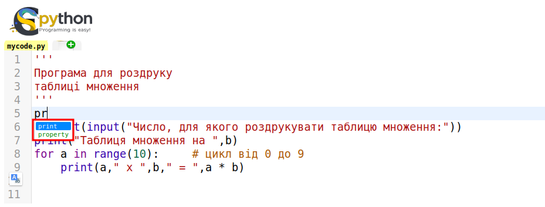
Автоматичне доповнення коду вмикається сполученням Ctrl-пропуск, слово доповнюється до кінця або пропонується вибір з кількох варіантів.
Пошук вмикається сполученням клавіш Ctrl+F - інструмент пошуку з'являється біля правої межі вікна середовища. Інструмент пошуку може перекриватись вікном консолі та іншими діалоговими вікнами, тож вам буде потрібно закрити їх.
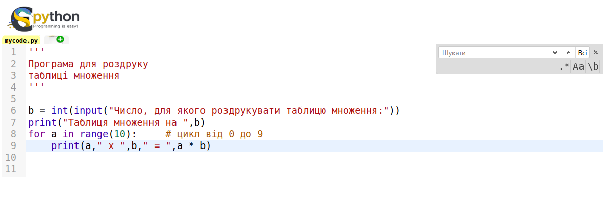
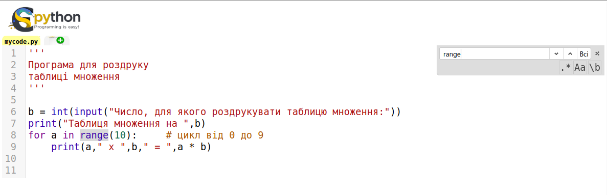
Заміна тексту вмикається тільки після виклику інструменту "Пошук тексту" сполученням клавіш Ctrl+H
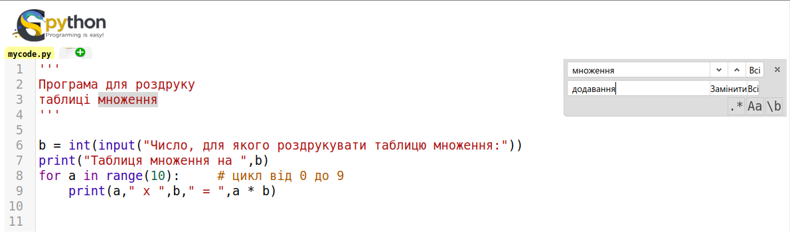
Безсумнівною переваги редактора є його простота, яка дозволяє розпочати створення програм без будь-якої попередньої підготовки.
Досвідчені розробники вважатимуть редактор коду ЄPython занадто простим, але він має достатньо функцій для більшості випадків використання, пов'язаних з вивченням програмування та швидким прототипуванням.
| Сполучення клавіш | Дія |
|---|---|
| Ctrl + C | Копіювати вибране до буфера обміну |
| Ctrl + V | Вставити вміст буферу обміну на місце курсору |
| Ctrl + X | Вирізати вибране, помістивши до буферу обміну |
| Ctrl + A | Вибрати все |
| Esc | Якщо виділено кілька елементів - зняти виділення з усіх, крім основного |
| Ctrl + D | Видалити рядок під курсором |
| Ctrl + Z | Скасувати останню зміну |
| Ctrl + Y | Повторити останню скасовану зміну |
| Ctrl + U | Скасувати останню зміну виділення |
| Alt + U | Повторити останню зміну виділення або останню зміну тексту, якщо виділення не залишилося |
| Ctrl + Home | Перемістити курсор на початок документа |
| Ctrl + End | Перемістити курсор у кінець документа |
| Alt + ← | Перемістити курсор на початок рядка |
| Home | Перейти до початку тексту в рядку або, якщо ми вже там, перейти до фактичного початку рядка (включаючи пропуски) |
| Alt + → | Перемістити курсор у кінець рядка |
| ↑ | Перемістити курсор на один рядок вгору |
| ↓ | Перемістити курсор на один рядок вниз |
| Page Up | Перемістити курсор на один екран вгору та прокрутити на таку ж відстань вгору |
| Page Down | Перемістити курсор на один екран вниз і прокрутити вниз на таку ж відстань |
| ← | Перемістити курсор на один символ ліворуч, переходячи до попереднього рядка після |
| → | Перемістити курсор на один символ праворуч, щоб перейти до наступного рядка після натискання на кінець рядка |
| Ctrl + ← | Переміщення ліворуч від групи перед курсором. Група — це набір символів слів, набір символів пунктуації, символ нового рядка або набір із кількох пропусків |
| Ctrl + → | Переміщення праворуч від групи після курсору |
| Shift + Backspace | Видалити символ перед курсором |
| Del | Видалити символ після курсору |
| Ctrl + Backspace | Видалити ліворуч від групи перед курсором |
| Ctrl + Del | Видалити до початку групи після курсору |
| Shift + Tab | Автоматичний відступ поточного рядка або виділення |
| Ctrl + ] | Зробити відступ поточного рядка або виділення на одну одиницю відступу |
| Ctrl + [ | Відступ поточного рядка або виділення на одну одиницю відступу |
| Tab | Якщо щось виділено, зробити відступ на одну одиницю відступу. Якщо нічого не вибрано, вставте символ табуляції |
| Enter | Вставити новий рядок із автоматичним відступом |
| Insert | Перемкнути режим вставки/перезапису |
| Ctrl + F | Знайти текст |
| Ctrl + H | Замінити( тільки якщо Пошук активний) |
| Ctrl + Alt + S | Зберегти поточний файл |
| Ctrl + O | Налаштування |
| Ctrl + Space | Пропозиція коду (вказівок мови програмування) |
| Ctrl + Enter | Запустити виконання/зупинити |
| F5 | Запустити виконання програми |
| Shift + F5 | Виконати один крок програми |
| Shift + Ctrl + . | Анімація виконання одного кроку |
Ви хочете розпочати програмувати? Це нескладно, ми вже можемо розпочинати.
Крок 1. Запустіть ЄPython.
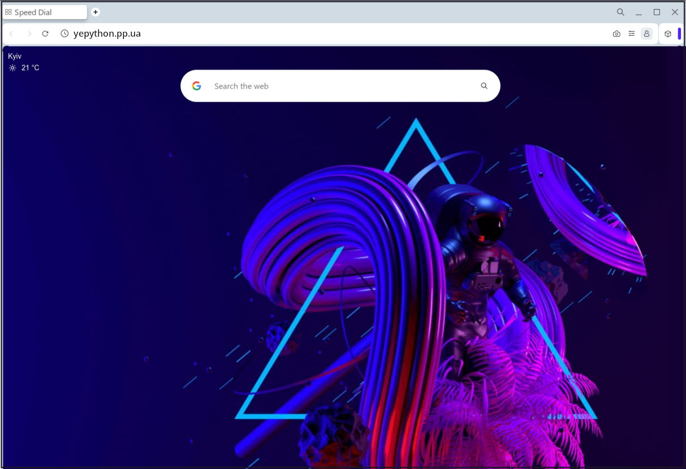
За допомогою вебоглядача запустіть ЄPython, надрукувавши у адресному рядку epython.online. Після завантаження середовища вас зустріне мінімалістичний інтерфейс з вікном редактора коду та панелі керування внизу праворуч.
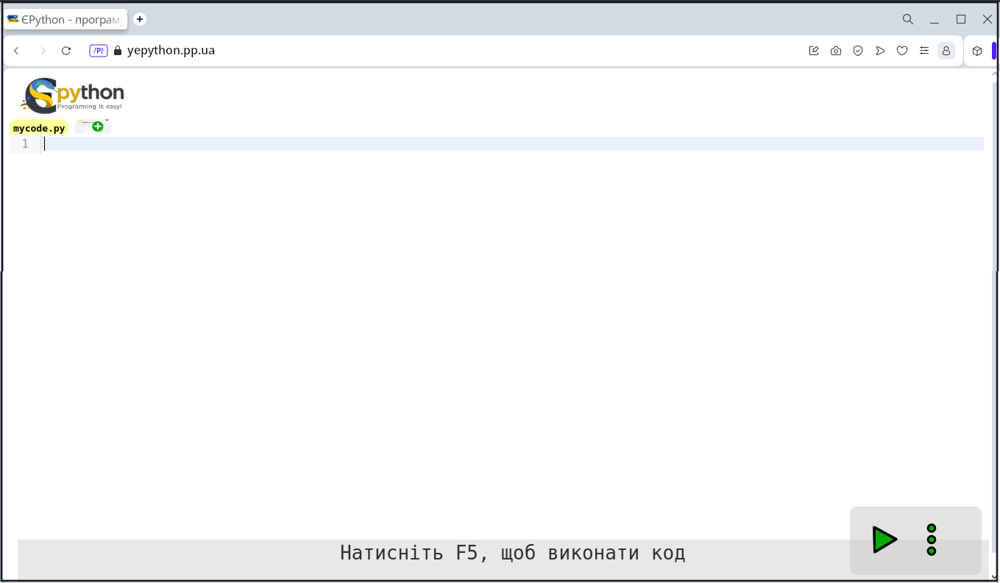
Крок 2. Напишіть код програми.
У вікні редактора коду ЄPython введіть таку вказівку (інструкцію):
print("Привіт, світ!")
Ця вказівка змусить Python надрукувати фразу "Привіт, світ!".
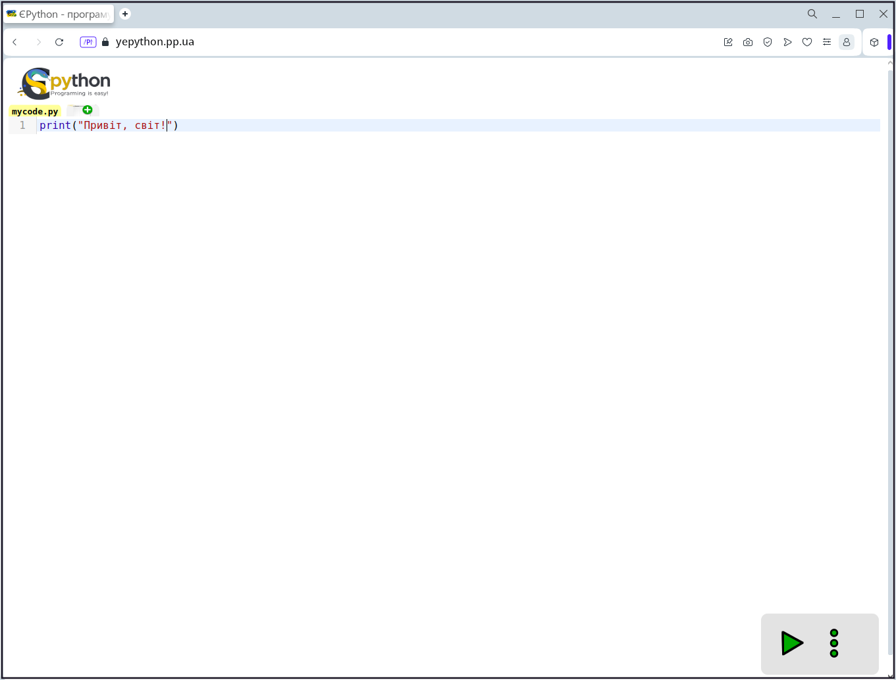
Крок 3. Запустіть свій код.
Програмний код створено, настав час його виконати.
Натисніть кнопку "Виконати" в меню ЄPython або скористайтеся клавішею F5. ЄPython перейде у режим виконання коду - запустить вашу програму. При цьому з'явиться вікно консолі, в якому з'являтимуться всі сповіщення та запити, які виникатимуть при виконанні програми.
У вікні консолі ви маєте побачити повідомлення - рядок Привіт, світ!, це вказує на те, що ваша програма виконана успішно.
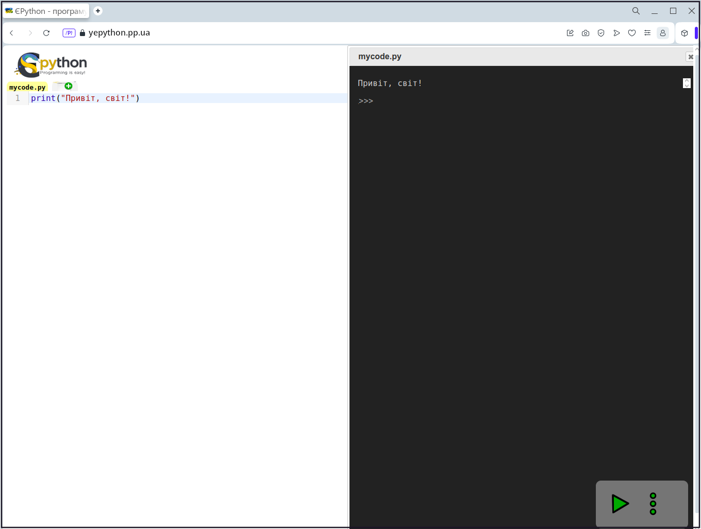
Крок 4. Збережіть свій код.
Можливо, у майбутньому ви захочете змінити код створеної вами програми - для цього її потрібно зберегти у файл.
У цьому разі ви можете скористатись інструментом "Файли", який доступний через панель керування або просто натисніть клавіші "Ctrl"+"Alt"+"S" (натиснувши та утримуючи "Ctrl" та "Alt", натисніть клавішу "S") - код створеної вами програми буде збережено у теці завантажень вашого вебоглядача.
За потреби ви завжди можете перейменувати файл, клацнувши по вкладці редактора з його іменем.
Вітаємо - ви щойно створили свою першу програму у ЄPython. Ознайомившись із ЄPython, ви побачите, що його простота та зручність роботи роблять його чудовим інструментом для вивчення Python - інтуїтивно зрозумілий інтерфейс, простий спосіб написання, збереження та запуску коду, пропонує ефективний підхід до вивчення програмування на Python.
Незалежно від того, чи ви новачок, який починає роботу з абсолютного нуля, чи програміст, який хоче поновити свої навички роботи з Python, ЄPython --- це інструмент, який варто використовувати.
Під час виконання програми відбувається лексична перевірка, компіляція та виконання коду програми.
Виконання програмного коду можна здійснити у різний спосіб:
Режими виконання:
Під час безперервного режиму швидкість виконання програми є максимальною, виконання коду може призупинятися лише для введення даних за допомогою клавіатури через вказівку "input()".
Покроковий режим використовується для налагодження роботи програм та для перегляду поточного стану змінних
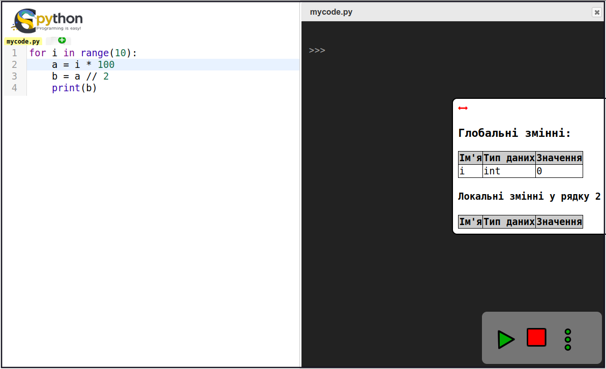
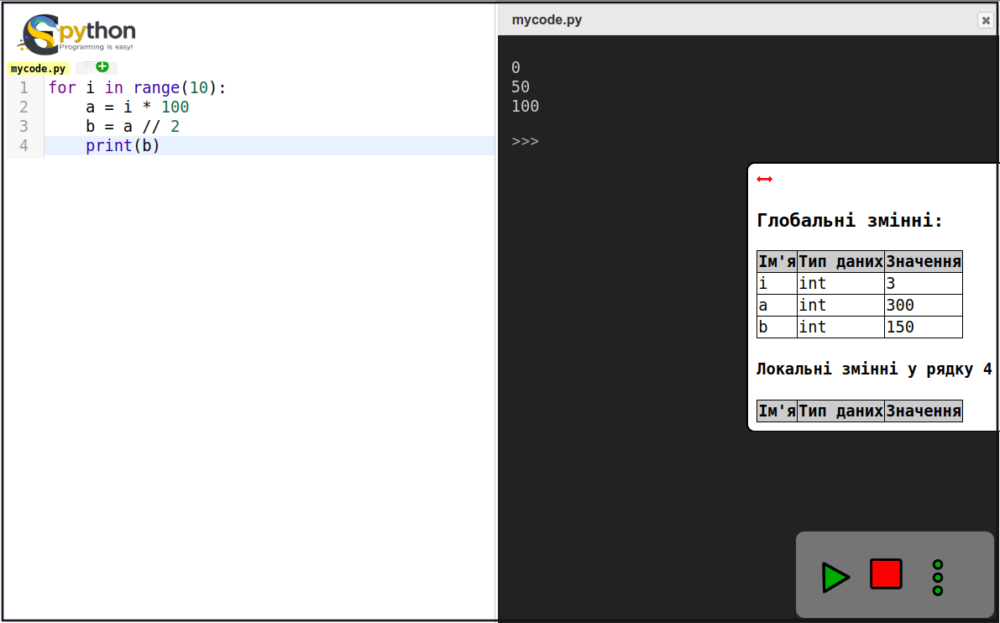
Режим покрокового виконання ви можете встановити через налаштування середовища - у цьому випадку символ кнопки "Виконати" зміниться на "Виконати покроково".
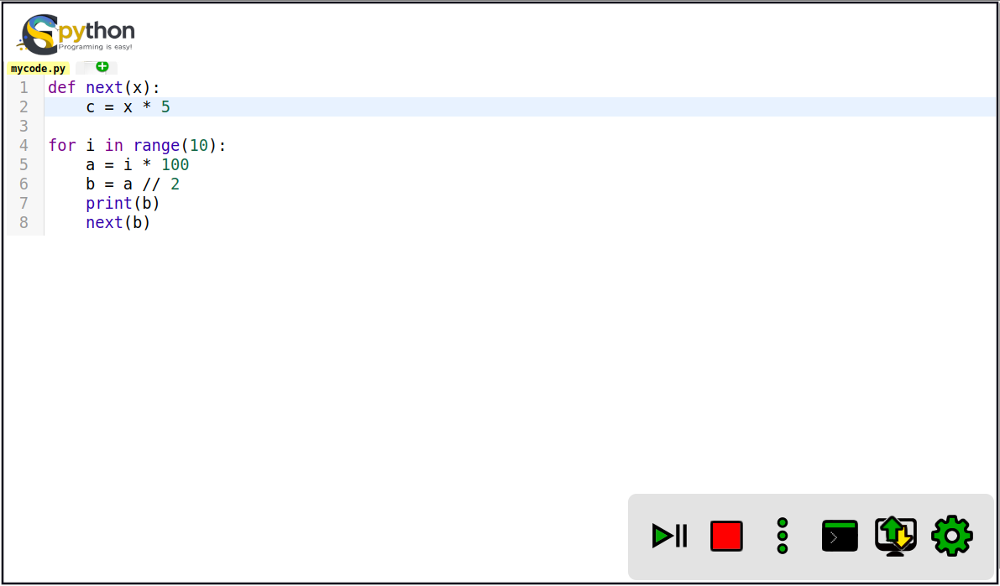
Щоб повернутись з режиму налагодження до звичайного виконання потрібно зупинити виконання програми за допомогою кнопки "Зупинити" ■ на панелі керування.
Для налагодження та зневадження (пошуку помилок) програм ви можете використовувати точки зупину.
Точки зупину - це спеціальні маркери, які призупиняють виконання програми в певній точці. При досягненні точки зупину в консолі відображається стан і значення локальних та глобальних змінних програми, це дозволяє перевірити поведінку програми. Після встановлення точка зупину залишається у вашій програмі, доки ви її явно не видалите.
Щоб встановити маркер точки зупину ●, ви маєте клацнути вказівником миші по номеру рядка, в якому потрібно призупинити роботу програми.
Повторний натиск по маркеру точки зупину видаляє його.
Для виконання коду з використанням точок зупину скористайтесь сполученням клавіш Ctrl+Enter. Повторний натиск цього сполучення продовжить виконання до наступної точки зупину або до закінчення програми.
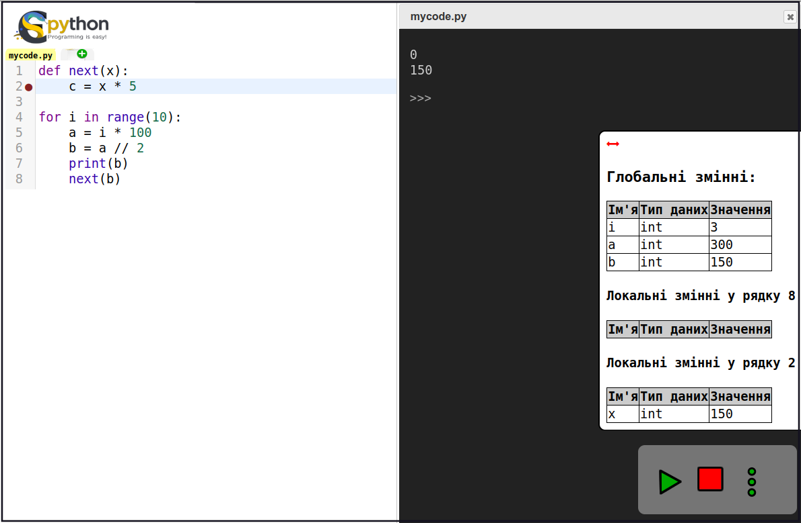
Точки зупину не впливають на процес виконання програми після натиску клавіші F5 або кнопки "Виконати" ▶ на панелі керування.
Як правило, виконання програми зупиняється при досягненні останнього рядка або такого, після якого не знаходяться інші вказівки програми.
Також програму буде зупинено при виявленні синтаксичних помилок та помилок виконання коду або при "зацикленні" на час більший, ніж 5 секунд.
Користувач може зупинити виконання програми за допомогою кнопки "Зупинити" ■ на панелі керування - панель керування автоматично розгортається під час виконання програми. Якщо панель згорнута, ви можете розгорнути її, натиснувши кнопку "Розгорнути" ⋮.
При зупинці програми відбувається автоматичне перезавантаження коду програми з локального сховища вебоглядача, тому зміни коду, які ви здійснювали до натиску кнопки "Зупинити" будуть скасовані. Для збереження змін у коді, які ви можливо здійснили під час роботи програми, натисніть кнопку "Виконати" - це збереже код програми у сховищі вебоглядача.
| Сповіщення | Опис |
|---|---|
| AssertionError | Оператор assert не виконується. |
| AttributeError | Призначення атрибута не вдається. |
| ExternalError | Зовнішня помилка |
| ImportError | Імпортований модуль не знайдено. |
| IndexError | Індекс послідовності виходить за межі діапазону. |
| IOError | Файлова операція введення/виведення не вдається |
| KeyError | Ключ не знайдено в словнику. |
| LookupError | Щось не знайдено по ключу або індексу |
| NameError | Змінна не знайдена в локальній або глобальній області видимості. |
| NegativePowerError | Піднесення числа до від'ємного степеня |
| NotImplementedError | Викликається не реалізована функція або метод |
| OperationError | Помилка виконання операції |
| OverflowError | Результат арифметичної операції завеликий для представлення |
| RecursionError | Під час виконання програми перевищено обмеження рекурсії інтерпретатора |
| ReferenceError | Ви намагаєтеся використати змінну чи об'єкт, які не були визначені чи оголошені |
| RuntimeError | Помилка середовища виконання |
| StopIteration | Ітератор більше не повертає елемент |
| SyntaxError | Синтаксичний аналізатор виявив синтаксичну помилку |
| IndentationError | Виникає, коли є неправильний відступ |
| SystemError | Інтерпретатор виявив внутрішню помилку |
| TimeLimitError | Помилка обмеження часу |
| TypeError | Функція або операція застосована до об'єкта неправильного типу |
| UnboundLocalError | Робиться посилання на локальну змінну у функції чи методі, але жодне значення не прив'язано до цієї змінної |
| UnicodeEncodeError | Під час кодування виникає помилка, пов'язана з Unicode |
| UnicodeDecodeError | Під час декодування виникає помилка, пов'язана з Unicode |
| ValueError | Функція отримує аргумент правильного типу, але неправильне значення |
| ZeroDivisionError | Другий операнд операції ділення або модуля дорівнює нулю |
Зверніть увагу, що сповіщення про виявлення синтаксичної помилки у коді програми SyntaxError: invalid syntax у ЄPython має вигляд SyntaxError: bad input - це пов'язане з особливостями реалізації компілятора Skulpt і не впливає роботу середовища та програм користувача.
При копіюванні коду програм з текстових редакторів можуть виникати помилки з відступами - редактори для відступів використовують символ табуляції, але в Python відступи формуються через символи пропуску.
Інструмент "Файли" надає можливість збереження файлу з текстом (кодом) програми та його вивантаження для редагування і виконання.
Файл завжди зберігається з іменем проєкту та розширенням .py.
Ви можете попередньо перейменувати файл проєкту, клацнувши по його вкладці.
Файл зберігається до теки завантажень, визначеної у вашому вебоглядачі.
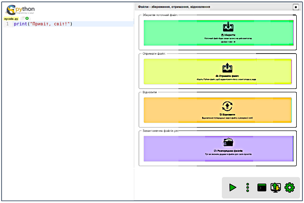
Користувачі можуть звантажувати до середовища необхідні файли з власного пристрою, обравши їх за допомогою діалогового вікна.
Дозволені текстові файли з розширеннями .py, .txt, .json. При завантаженні файлу він відкривається у новій вкладці.
Середовище ЄPython створювалось з розрахунку на те, що користувач з певних причин може не зберегти текст (код) створеної програми через відключення електропостачання, збій у програмному забезпеченні операційної системи або через власну неуважність.
Копії коду всіх створених програм при першому їх запуску зберігаються у внутрішньому сховищі вебоглядача і за потреби їх можна відновити, скориставшись засобом відновлення, який викликається натиском на кнопку "Відновити":
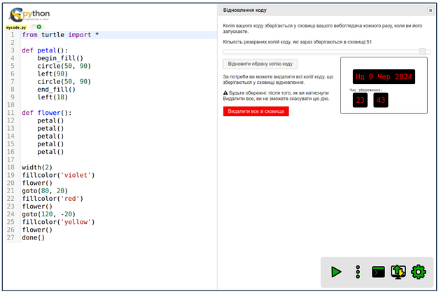
Пересовуючи повзунок, обираємо відповідну копію програми --- її код автоматично з'являється для перегляду у вікні редактора. Обравши потрібну копію натискуємо кнопку "Відновити обрану копію" --- вона стане доступною для редагування та виконання.
За потреби ви можете спорожнити сховище копій програм, натиснувши кнопку "Видалити все зі сховища".
На відміну від багатьох інших онлайн-середовищ програмування, в ЄPython реалізована практично повноцінна робота з файлами з використанням внутрішньої файлової системи, яка створюється в локальному сховищі (localStorage) вашого вебпереглядача(браузера).
Головна причина — безпека, програмний, що виконується у вебсторінці, не має прямого доступу до файлової системи вашого комп'ютера — це фундаментальне обмеження, закладене в архітектуру браузерів, щоб убезпечити дані та пристрої користувача від зловмисників.
Уявіть, якби будь-який сайт міг вільно читати чи записувати файли на вашому диску — це відкрило б двері для крадіжки даних, вірусів, шифрування файлів (як віруси-вимагачі) тощо, просто через відкриття сторінки в браузері. Тому браузери ізолюють код сторінки у так званій "пісочниці" (sandbox): сайт може взаємодіяти з файлами користувача лише через контрольовані механізми — наприклад, діалог вибору файлу чи діалог завантаження , де саме користувач свідомо вибирає, який файл відкрити або куди зберегти.
Розробники ЄPython зробили віртуальну файлову систему, яка емулює поведінку справжньої: open(), читання, запис, os.path тощо працюють так, ніби це реальні файли — просто вони фізично зберігаються в localStorage браузера, а не на диску.
Розпорядник файлів — це вбудований у ЄPython файловий менеджер, який дозволяє зберігати, переглядати й організовувати файли у власній віртуальній файловій системі. Ця система не пов'язана з файлами на вашому комп'ютері — вона працює повністю в межах браузера і призначена для того, щоб Python-код, написаний у редакторі, міг читати й записувати файли (наприклад, через open()), як у звичайній операційній системі.
Відкрити Розпорядника файлів можна кнопкою "Розпорядник файлів" у розділі "Файли" на панелі керування .
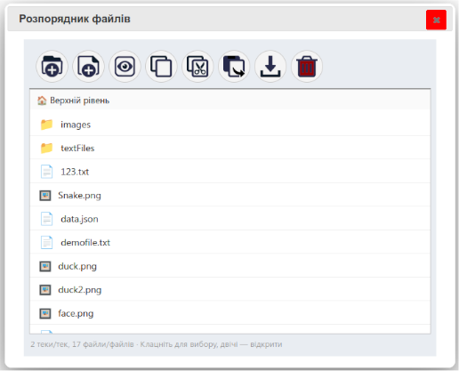
/ ("Верхній рівень").У верхній частині Розпорядника розташовані кнопки-дії:
| Кнопка | Дія |
|---|---|
| 📁➕ Створити теку | Відкриває діалог введення назви нової теки в поточному каталозі |
| 📤 Додати файл | Завантажує файл із вашого комп'ютера у віртуальну файлову систему |
| 👁 Переглянути файл | Показує вміст виділеного файлу |
| 📋 Копіювати | Копіює виділений файл у буфер обміну |
| ✂️ Вирізати | Переміщує виділений файл (копіює в буфер і видаляє оригінал після вставки) |
| 📥 Вставити | Вставляє файл із буфера обміну в поточну теку |
| ⬇️ Зберегти файл | Завантажує виділений файл на ваш комп'ютер (як звичайне завантаження браузера) |
| 🗑 Видалити | Видаляє виділений файл або теку (з підтвердженням) |
Якщо тека з такою назвою вже існує в поточному каталозі — з'явиться повідомлення про помилку.
⚠️ Обмеження: дозволено завантажувати лише файли з розширеннями
.txt,.csvта.png. Файли інших типів будуть відхилені з повідомленням про помилку.
.txt і .csv завантажуються та зберігаються як текст..png завантажується та зберігається у вигляді Data URL (base64), що дозволяє переглядати його як зображення прямо в менеджері..txt/.csv показується текстовий вміст; для .png — зображення.⚠️ Копіювати/вирізати можна лише файли, не теки.
Файли, створені через Розпорядника, доступні вашому Python-коду під час виконання — так само, як робота з файлами в звичайній ОС, наприклад:
# Запис у файл
with open('/notes.txt', 'w') as f:
f.write("Привіт!")
# Читання з файлу
with open('/notes.txt', 'r') as f:
print(f.read())
Шляхи вказуються відносно кореня віртуальної файлової системи (/).
/data для CSV-файлів з даними, /images для .png-ресурсів..csv-файли, які потім читає ваш код через модуль csv або pandas..png-файли, додані через Розпорядника, можна опрацьовувати модулем PIL..txt, .csv, .png.При використанні бібліотеки Pygame Zero вам будуть потрібні ресурси --- файли зображень. Їх ви можете завантажувати за допомогою засобів Галереї ресурсів. Детальніше це ми розглянемо пізніше.
Натиск на кнопку "Зупинити" зупиняє виконання програми та перезавантажує її з внутрішнього сховища, тож зміни, які ви внесли до коду програми моменту її останнього запуску можуть бути втрачено. Використовуйте кнопку "Зупинити" для зупинки роботи програм з безкінечними циклами або при роботі програми у "фоновому режимі". Якщо ви вносили зміни --- запустіть програму на виконання, щоб зберегти їх.
Зверніть увагу, що у пристроях на Android кнопка "Закрити" діалогових вікон може не функціонувати --- закрити всі діалогові вікна можна двічі натиснувши на кнопку "Налаштування".
Щоб зробити читання коду програми та результатів її виконання зручним, у тому числі для людей із слабким зором, ви можете змінювати розмір символів за допомогою вікна налаштувань --- чим більший шрифт, тим легше його читати. Розмір шрифту 14 може бути найкращим компромісом між кількістю інформації на екрані та можливістю її легко сприймати.
За допомогою панелі налаштувань ви можете обрати бажаний розмір шрифту для вікна редактора коду та для консолі, в якій виводяться результати роботи програми --- для цього переміщуйте відповідні повзунки, змінюючи розмір шрифту.
Встановлені налаштування застосовуються негайно і будуть автоматично використовуватись у наступних запусках середовища до наступної їх зміни.
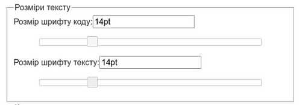
На відміну від налаштувань масштабу сторінки вебоглядача, зміни розміру застосовуються тільки для символів, не змінюючи вигляду графічних елементів сторінки.
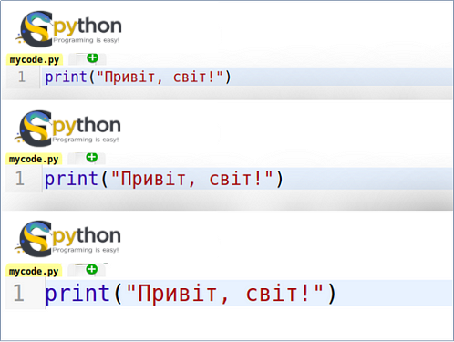
Зміна розміру шрифту редактора (14, 18 та 22 пункти)
Також ви можете налаштувати кольорову тему відображення редактора та консолі --- більш світлі кольори чудово підходять для кодування вдень, хоча деякі люди віддають перевагу темним темам.
Зрештою, вибір світлої або темної теми оформлення залежить від освітлення та особистих уподобань.
Контраст відображення написів на екрані має значення для їх розбірливості --- чорний текст на білому тлі підходить для більшості людей із вадами зору.
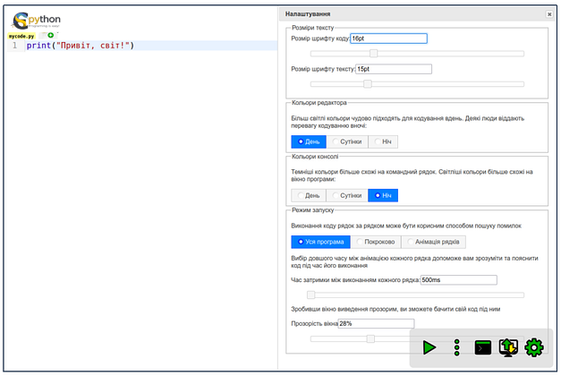
Кольорова тема "День"
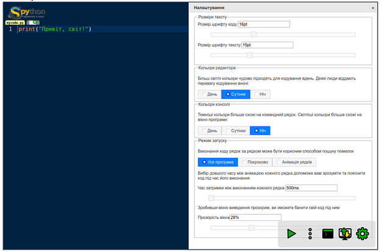
Кольорова тема "Сутінки"
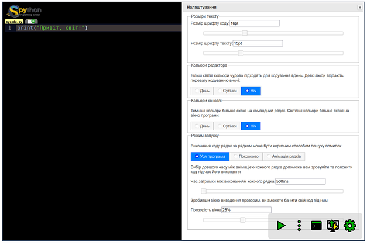
Кольорова тема "Ніч"
Ви також можете налаштувати кольори консолі:
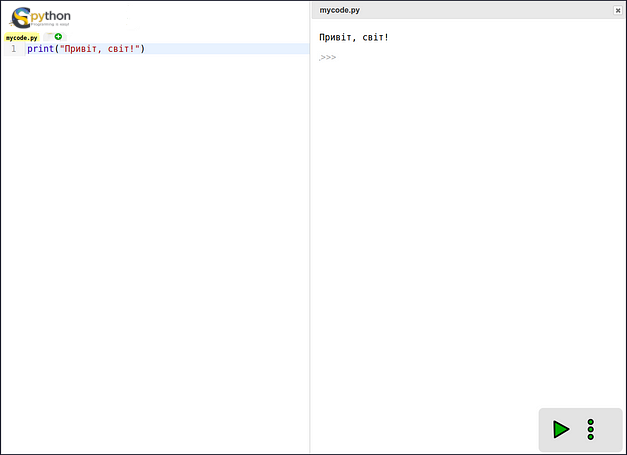
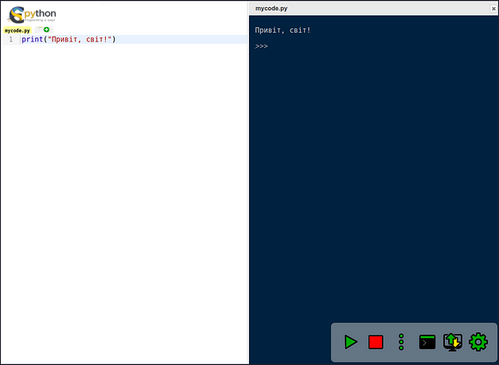
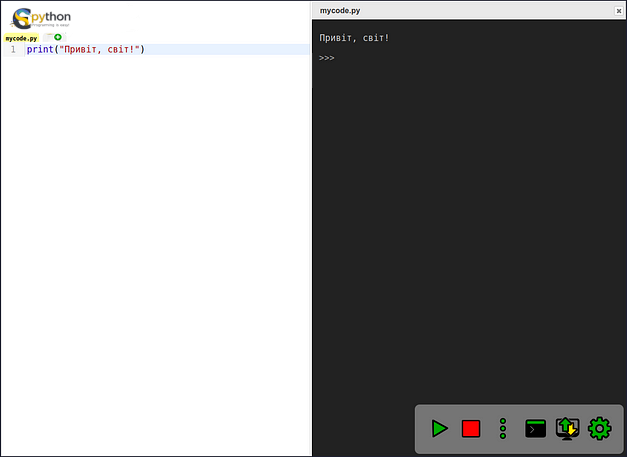
За замовчуванням програма виконується дуже швидко, але в деяких випадках покрокове виконання коду рядок за рядком може бути корисним способом пошуку помилок. Покроковий режим можна увімкнути через налаштування або просто натиснувши комбінацію клавіш Shift+F5.
Скасування покрокового режиму викликається через натиск кнопки "Зупинити програму".
Також ви можете обрати довший час між анімацією кожного рядка --- це допоможе вам зрозуміти та пояснити код під час його виконання
Зробивши вікно виведення результатів більш прозорим, ви зможете бачити код програми під ним:
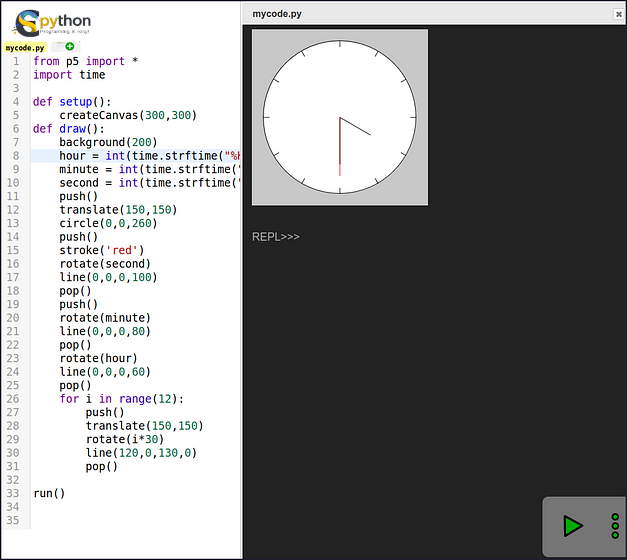
Прозорість 0%
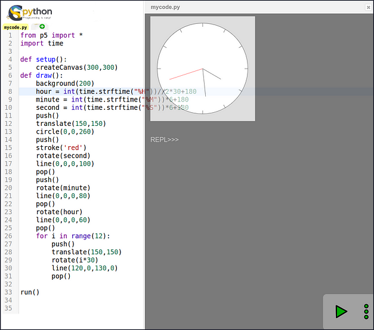
Прозорість 40%
Модуль - це файл, що містить визначення функцій, класів, змінних та їх код. Модулі дозволяють структурувати код і розділити його на менші, легко керовані частини.
Бібліотека --- це набір пов'язаних модулів, які об'єднані разом для вирішення певного завдання або надання певного функціоналу, недоступного у стандартному комплекті Python. Бібліотеки можна подати як розширення базового функціоналу Python, яке допомагає розробникам вирішувати різні завдання без необхідності писати все з нуля.
У ЄPython в основному існує два типи модулів -- вбудовані модулі та зовнішні модулі.
Вбудовані модулі. ЄPython поставляється з набором вбудованих модулів, доступних у стандартній бібліотеці Skulpt, і ми можемо використовувати їх без встановлення додаткового програмного забезпечення чи пакетів. Серед часто використовуваних вбудованих модулів ЄPython є math, random, datetime, time та багато інших. Модулі імпортуються до програми за допомогою вказівок import.
Зовнішні модулі. ЄPython також має можливість використовувати зовнішніх модулі, які не входять до стандартної бібліотеки. Ці модулі створені для надання додаткових функцій, недоступних у вбудованих модулях, що полегшує розробникам створення складних і складних програм.
Щоб використовувати модуль, його потрібно імпортувати за допомогою інструкції import:
import math
result = math.sqrt(16)
print(result)
Оскільки ЄPython є специфічним середовищем, обмеженим:
тому реалізація стандартних бібліотек Python є неповною, перелік відсутніх бібліотек надається далі. Незважаючи на вищенаведене, Skulpt, як середовище виконання, надає достатні можливості використання стандартних бібліотек Python - такі бібліотеки, як math, random, datetime, time, re, copy, sys, collections, turtle та багато інших, функціонують нормально. Використовуючи модулі ви маєте пам'ятати, що такий інструмент, як pip не працює в онлайн-середовищах програмування і, як правило, ви обмежені бібліотеками, які надає середовище.
У ЄPython реалізовано через Skulpt такі додаткові бібліотеки/модулі Python:
| Модуль | Призначення |
|---|---|
os |
Робота з операційною системою (шляхи, змінні середовища тощо) |
p5 |
Графічна бібліотека p5.js для творчого кодування |
PIL |
Обробка зображень (аналог Pillow) |
SimpleGraphics |
Спрощена графічна бібліотека |
tkinter |
Створення графічних інтерфейсів (GUI) |
turtle |
Черепашача графіка |
pgzrun |
Pygame Zero — спрощена розробка ігор |
pygame |
Розробка ігор та мультимедіа |
matplotlib |
Побудова графіків |
matplotlib.pyplot |
Підмодуль matplotlib для побудови графіків (pyplot-інтерфейс) |
numpy |
Чисельні обчислення, масиви |
numpy.random |
Підмодуль numpy для генерації випадкових чисел |
pandas |
Аналіз та обробка табличних даних |
music |
Робота зі звуком/музикою |
microbit |
Емуляція API для мікроконтролера BBC micro:bit |
arduino |
Емуляція API для Arduino |
sqlite3 |
Робота з базами даних SQLite |
withcode |
Допоміжний модуль withcode |
soundfx |
Звукові ефекти |
requests |
HTTP-запити |
bs4 (BeautifulSoup) |
Парсинг HTML/XML |
csv |
Робота з CSV-файлами |
json |
Робота з форматом JSON |
scipy |
Наукові обчислення |
Кожен модуль підвантажується "на льоту" (lazy loading) при виконанні відповідного import у коді користувача, замість того щоб вантажити всі бібліотеки одразу при старті сторінки.
Розробники працюють над розширенням кількості модулів, доступних для завантаження користувачем.
Користувачі можуть створювати власні модулі, як файли з розширенням .py - для їх використання вони мають бути попередньо завантажені до середовища програмування на окрему вкладку.
__future__,__phello__.foo,_abcoll,_MozillaCookieJar,_threading_local,abc,anydbm,ast,asyncore,atexit,audiodev,base64,BaseHTTPServer,bdb,binhex,bisect,bsddb,calendar,cgi,CGIHTTPServer,cgitb,chunk,cmd,code,codecs,codeop,colorsys,command,commands,compileall,compiler,config,ConfigParser,contextlib,Cookie,copy_reg,cProfile,csv,ctypes,curses,data,dbhash,decimal,difflib,dircache,dis,DocXMLRPCServer,dom,dumbdbm,dummy_thread,encodings,filecmp,fixes,fnmatch,formatter,fpformat,fractions,ftplib,functools,genericpath,getopt,getpass,glob,gzip,hashlib,heapq,hmac,hotshot,htmlentitydefs,htmllib,HTMLParser,httplib,Icons,idlelib,ihooks,imaplib,imghdr,imputil,json,lib2to3,linecache,locale,macholib,macpath,macurl2path,mailbox,mailcap,markupbase,md5,mhlib,mime,mimetypes,MimeWriter,mimify,modulefinder,multifile,multiprocessing,netrc,new,nntplib,nturl2path,numbers,opcode,optparse,os,os2emxpath,parsers,pgen2,pickle,pickletools,pipes,pkgutil,plistlib,popen2,poplib,posixfile,posixpath,profile,pstats,pydoc,pydoc_topics,quopri,repr,rfc822,rlcompleter,robotparser,sched,sets,sgmllib,sha,shelve,shlex,SimpleHTTPServer,SimpleXMLRPCServer,site,smtpd,smtplib,sndhdr,socket,SocketServer,sqlite3,sre,sre_compile,sre_parse,ssl,stat,statvfs,string,stringold,stringprep,struct,subprocess,sunau,symtable,tabnanny,tarfile,telnetlib,tempfile,tests,tests,textwrap,toaiff,token,tokenize,traceback,tty,urllib2,urlparse,user,UserDict,UserList,UserString,warnings,wave,weakref,wsgiref,xdrlib,xmllib,xmlrpclib,zipfile
Онлайнові середовища програмування, як правило, обмежують користувача у роботі з файлами, які знаходяться на пристрої користувача з необхідності дотримання політик безпеки.
ЄPython надає можливість роботи з файлами, але вони знаходяться не на диску, а у локальному сховищі вебоглядача і доступному через менб Файли-Розпорядник файлів.
Створені текстові відображаються також вкладками файлів (над вікном редактора).
Функції та методи роботи з файлами є такими, як і в "класичному" Python. У наведеному нижче прикладі програма створює файл demofile.txt (з'являється вкладка з таким іменем) та записує до нього деякий вміст, потім зчитуючи його.
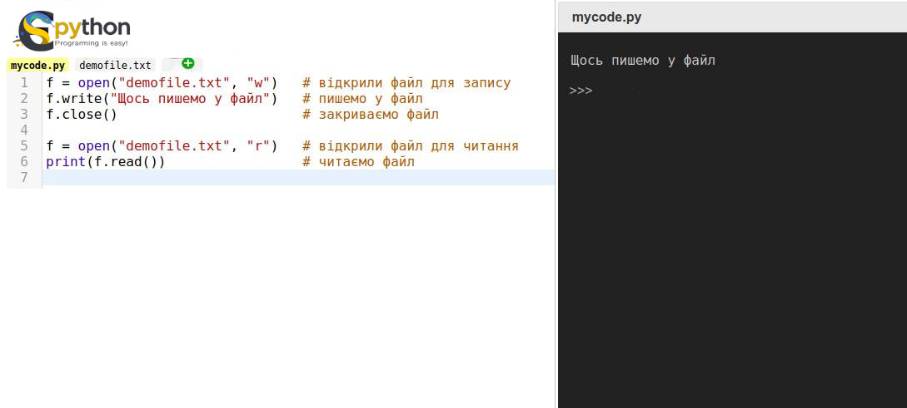
Створення файлу, запис до нього та зчитування з нього
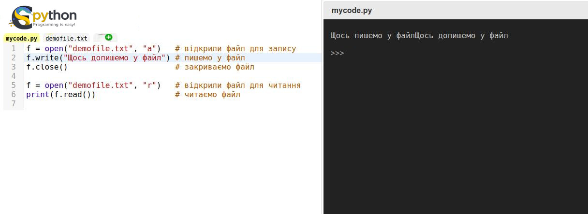
Додавання вмісту до раніше створеного файлу
Якщо потрібно працювати зі створеним раніше файлом - звантажуємо його до середовища через інструмент "Файли". Таким самим способом зберігаємо файли на диску. Перейменувати або видалити файл - клацаємо по його вкладці - відкриється відповідне діалогове вікно.
Файли середовища автоматично зберігаються разом з основною програмою і відновлюються разом з нею.
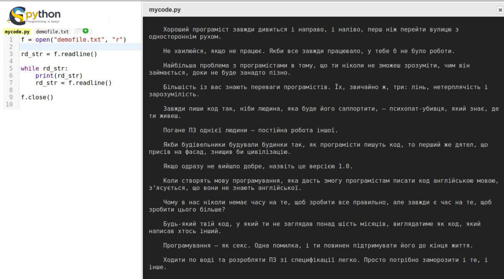
Користувач може запускати середовище у різних конфігураціях через параметри адресного рядка.
view=embed
Приховує логотип і вкладки файлів — режим "вбудовування" (наприклад, для <iframe> на іншому сайті).
https://yepython.pp.ua/?view=embed
load=<URL>
Завантажує вміст .py-файлу за вказаною адресою (звичайний GET-запит через XMLHttpRequest) і підставляє його як код у редактор.
https://yepython.pp.ua/?load=https://example.com/scripts/hello.py
⚠️ URL має бути доступний по HTTP(S) і дозволяти запити з іншого джерела (CORS), інакше завантаження не спрацює.
run=<URL>
Те саме, що load, але після завантаження код одразу автоматично виконується (runImmediately = true).
https://yepython.pp.ua/?run=https://example.com/scripts/hello.py
code=<base64>
Передає сам код Python прямо в адресному рядку, закодований у Base64 (UTF-8-безпечне декодування через atob + decodeURIComponent(escape())). Може містити або звичайний текст коду, або JSON-об'єкт { "файл.py": "код" } для кількох файлів одразу.
Приклад: код print("Привіт, світ!") у Base64 — cHJpbnQoItCf0YDQuNCy0ZbRgiwg0YHQstGW0YIhIik=
https://yepython.pp.ua/?code=cHJpbnQoItCf0YDQuNCy0ZbRgiwg0YHQstGW0YIhIik=
runcode=<base64>
Те саме, що code, але автоматично запускає код одразу після завантаження сторінки.
https://yepython.pp.ua/?runcode=cHJpbnQoItCf0YDQuNCy0ZbRgiwg0YHQstGW0YIhIik=
assets=<URL>
Додатково підвантажує файл assets.json за вказаною адресою і додає його як окрему вкладку в редакторі (корисно для проєктів, яким потрібні додаткові ресурси — зображення, дані тощо).
https://yepython.pp.ua/?run=https://example.com/scripts/hello.py&assets=https://example.com/scripts/assets.json
Параметри можна поєднувати. Найпоширеніший сценарій — вбудований, автоматично запущений приклад коду:
https://yepython.pp.ua/?view=embed&run=https://example.com/scripts/demo.py
або передача коду напряму без зовнішнього файлу:
https://yepython.pp.ua/?view=embed&runcode=cHJpbnQoItCf0YDQuNCy0ZbRgiwg0YHQstGW0YIhIik=
view=embed + run/runcode — ідеально для вставки живого прикладу коду на освітній сайт чи в блог через <iframe>, де учень одразу бачить результат виконання.load/run з URL — зручно для викладача, який хоче поділитися посиланням, що відкриває конкретний файл-завдання з хмарного сховища чи GitHub (raw-посилання).code/runcode — зручно генерувати програмно (наприклад, кнопка "Спробувати онлайн" на документації), коли короткий фрагмент коду треба передати без окремого файлу.assets — для завдань, де потрібні супутні дані (CSV, JSON, зображення), які підвантажуються разом із кодом.ЄPython надає можливість при запуску відкрити код програми, який передається в адресному рядку браузера після адреси сайту. Програма кодується кодуванням Base64 (https://uk.wikipedia.org/wiki/Base64) і записується після адреси сайту, починаючи з хеш-символу(#).
Для прикладу, програма
a = 5
b = 12
print(a + b)
передається таким чином:
https://yepython.pp.ua/?code=YSA9IDUKYiA9IDEyCnByaW50KGEgKyBiKQ==
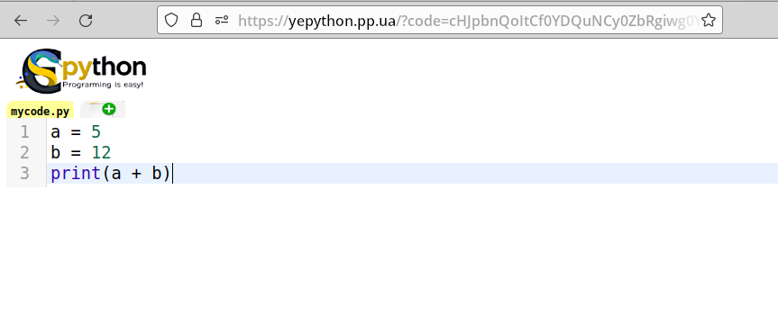
Автоматичний запуск переданих через адресу програм не передбачений.
Для полегшення створення запускачів з закодованим текстом програми можна використати сервіс, доступний за покликанням: https://ed-info.github.io/mklauncher/
Щоб створити запускач вам необхідно здійснити такі кроки:
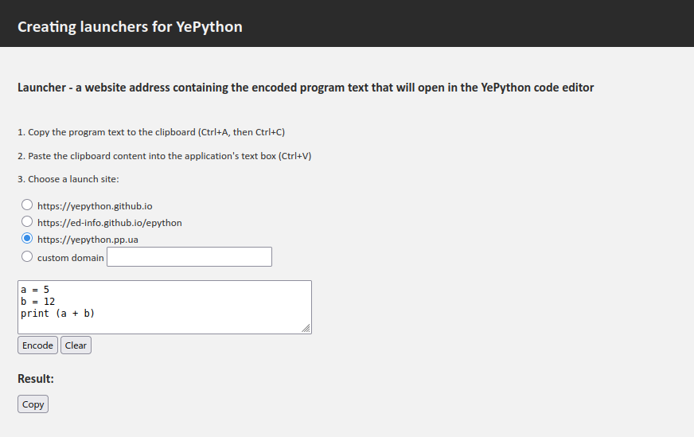
Створення адресного рядка-запускача
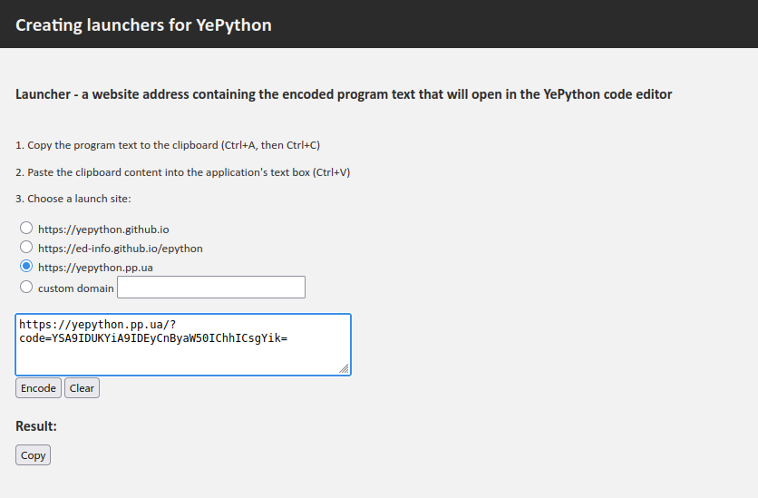
Запускач створено
Ви можете приховувати логотип середовища та вкладки файлів - це суттєво економить місце у вікні вебоглядача і може бути доречним, коли ви додаєте ЄPython до свого власного сайту або навчального онлайн-курсу. Для цього в адресному рядку прописуємо ?param=embed (як на зразку):
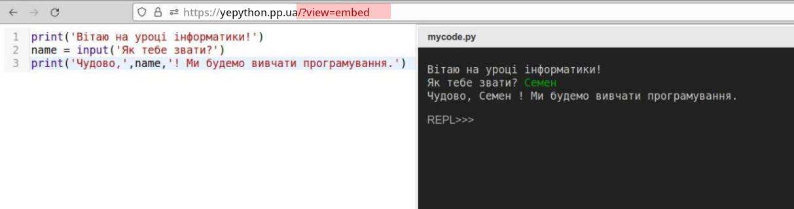
Ви можете додати функціонал ЄPython до власного сайту, блогу або системи дистанційного навчання за допомогою тегів <iframe></iframe>, додавши наступний вміст для фрейму без коду (фрейм - кадр, прямокутна ділянка, в якій буде відображатися ЄPython):
<iframe
width="900"
height="400"
src="https://yepython.pp.ua">
</iframe>
Або для фрейму з кодом програми:
<iframe
width="900"
height="400"
src="https://yepython.pp.ua/?code=Zm9yIGkgaW4gcmFuZ2UoNSk6CiAgICBwcmludChpKQ==">
</iframe>
Адреса - запускач програми, вона містить код програми, який буде відкрито у вікні редактора.
Для фрейму без логотипу і вкладок файлів:
<iframe
width="900"
height="400"
src="https://yepython.pp.ua/?view=embed">
</iframe>
З кодом програми:
<iframe
width="900"
height="400"
src="https://yepython.pp.ua/?view=embed&code=Zm9yIGkgaW4gcmFuZ2UoNSk6CiAgICBwcmludChpKQ==">
</iframe>
Тег <iframe> також має декілька атрибутів, пов'язаних з ним:
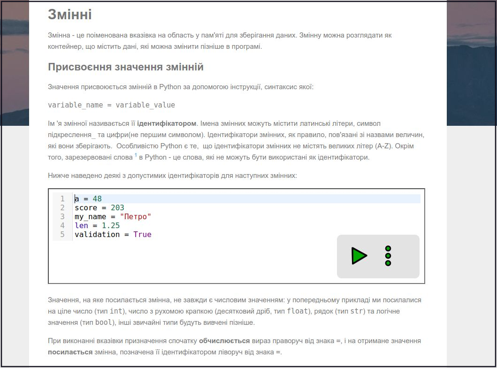
Середовище ЄPython додано до блогу, створеному у Blogger
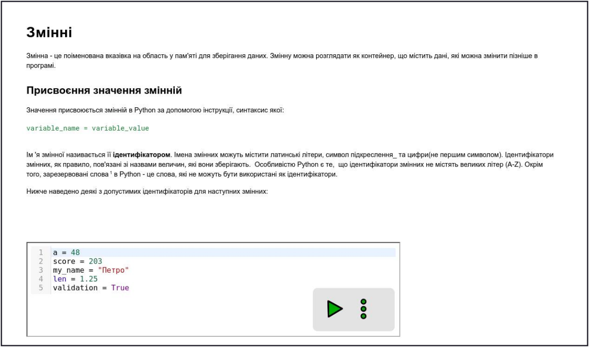
ЄPython у сайті, створеному за допомогою Google Sites
За потреби ви можете розмістити ЄPython на власному хостингу. Для цього вам попередньо потрібно завантажити актуальний код застосунку, отримавши архів за покликанням:
https://github.com/yepython/yepython.github.io/archive/refs/heads/main.zip
Код поширюється на умовах ліцензії MIT:
Ця ліцензія дозволяє особам, які отримали копію цього програмного забезпечення та супутньої документації (надалі іменованими «Програмне Забезпечення»), безоплатно використовувати Програмне Забезпечення без обмежень, включаючи необмежене право на використання, копіювання, зміну, додавання, публікацію, розповсюдження, субліцензування копій Програмного Забезпечення, а також особам, яким надається це Програмне Забезпечення, за умови дотримання таких умов: Вказане вище повідомлення про авторське право та ці умови повинні бути включені до всіх копій або значних частин цього Програмного Забезпечення.
ДАНЕ ПРОГРАМНЕ ЗАБЕЗПЕЧЕННЯ НАДАЄТЬСЯ «ЯК Є», БЕЗ БУДЬ-ЯКИХ ГАРАНТІЙ, ЯВНО ВИРАЖЕНИХ АБО ТАКИХ, ЩО МАЮТЬСЯ НА УВАЗІ, ВКЛЮЧАЮЧИ, АЛЕ НЕ ОБМЕЖУЮЧИСЬ, ГАРАНТІЯМИ ВІДПОВІДНОСТІ ЙОГО КОНКРЕТНОГО ПРИЗНАЧЕННЯ І ВІДСУТНОСТІ ПОРУШЕНЬ ПРАВ. НІ В ЯКОМУ ВИПАДКУ АВТОРИ АБО ПРАВОВЛАСНИКИ НЕ НЕСУТЬ ВІДПОВІДАЛЬНОСТІ ЗА ПОЗОВАМИ ЩОДО ВІДШКОДУВАННЯ ЗБИТКІВ АБО ІНШИХ ВИМОГ ДІЙСНИХ КОНТРАКТІВ, ДЕЛІКТІВ ТА ІНШИХ ДІЙ, ЯКІ ВИНИКЛИ, МАЮТЬ ПРИЧИНОЮ АБО ПОВ'ЯЗАНІ З ПРОГРАМНИМ ЗАБЕЗПЕЧЕННЯМ АБО ВИКОРИСТАННЯМ ПРОГРАМНОГО ЗАБЕЗПЕЧЕННЯ АБО ІНШИМИ ДІЯМИ З ПРОГРАМНИМ ЗАБЕЗПЕЧЕННЯМ.
Сумісніть з "класичним" Python є важливим фактором у використанні ЄPython, вона забезпечується сумісністю середовища виконання Skulpt, яке надає функціональні можливості, відповідні таким, які наявні у Python 3.10.
Разом з тим є суттєві застереження на які варто зважати:
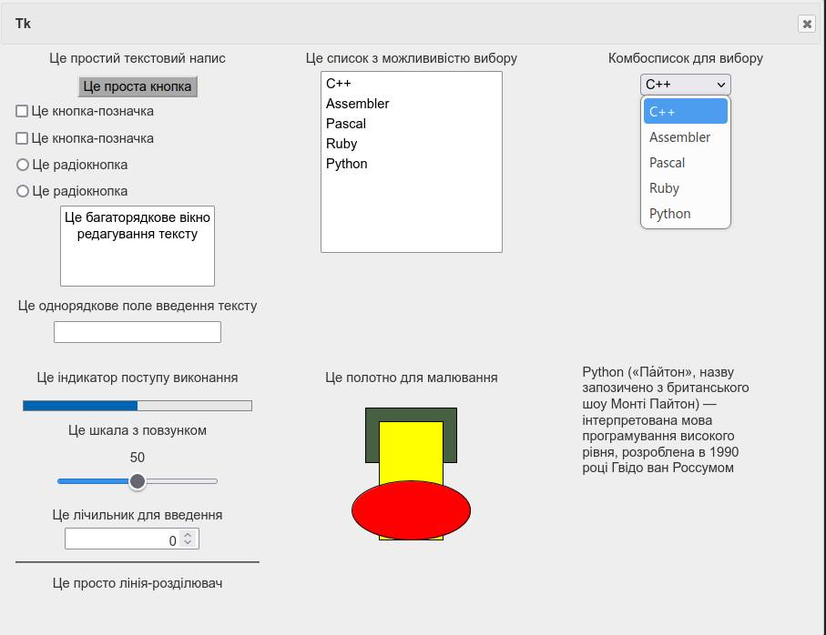
Програма, створена з використанням Tkinter у ЄPython
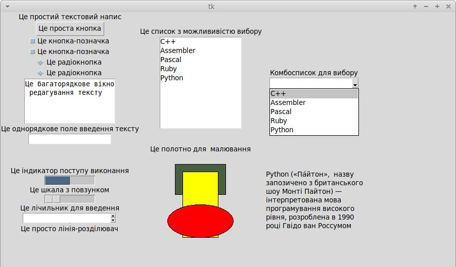
Та ж сама програма виконується у середовищі Thonny
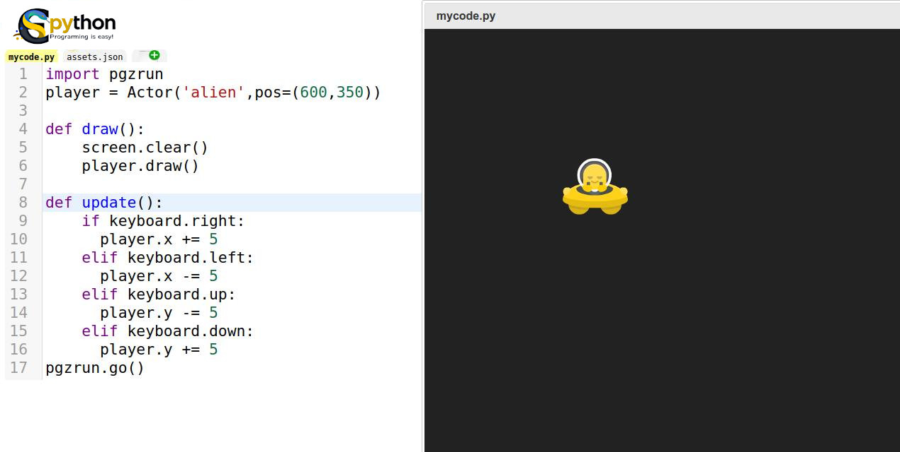
Програма використовує модуль Pygame Zero (pgzrun)
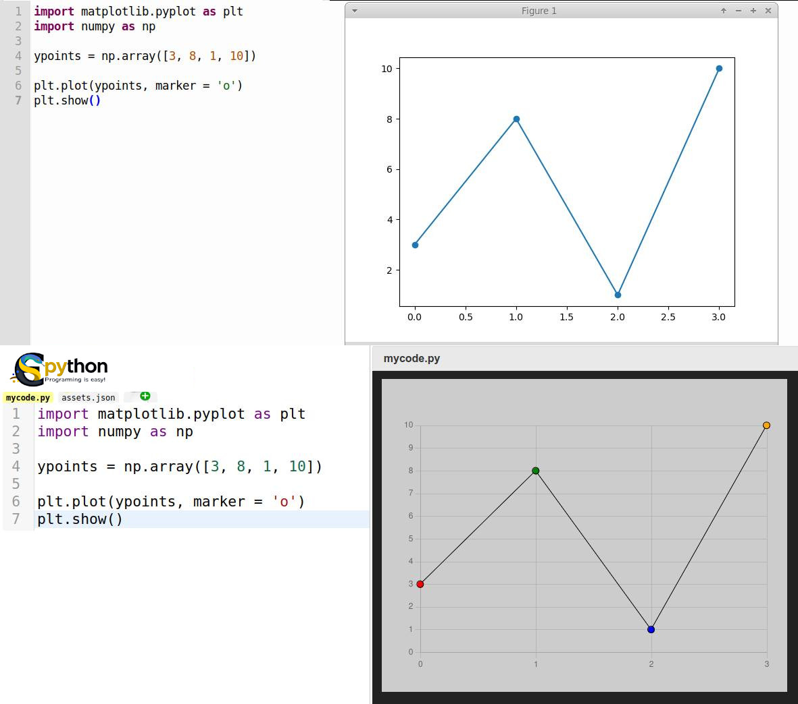
Використання модуля matplotlib у Thonny та в ЄPython
Окрім використання в онлайні, ЄPython можна використовувати і для роботи без доступу до Інтернету - як комп'ютерну програму або застосунок для операційної системи Android.
Для роботи без доступу до Всесвітньої мережі, вам попередньо потрібно завантажити та встановити ЄPython на ваш пристрій (персональний або портативний комп'ютер, планшет або смартфон).
Завантажити програми-інсталятори ви можете звідси:
https://drive.google.com/drive/folders/193cj-W32U8f5ZGmQjEuom7KSepx3-9PM
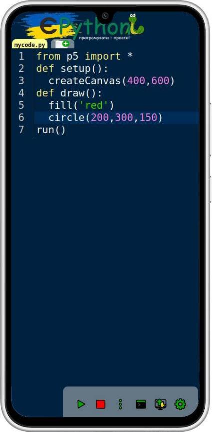
Оберіть потрібну програму відповідно до операційної систем - Windows, Linux, MacOS та Android та її розрядності (32 та 64-розрядні).
Застосунок повністю ідентичний онлайновій версії ЄPython, однаково працює як на комп'ютерах, так і на мобільних пристроях - дизайн налаштовується автоматично.
У пристроях на Android не працює кнопка "Закрити"(х) вікон консолі, налаштування та збереження/завантаження файлу - щоб закрити ці вікна, скористайтесь кнопками на панелі керування, які їх відкривають - наступний натиск закриває відповідне вікно. Кнопка "Налаштування" ("шестерня") закриває всі відкриті вікна окрім вікна редактора.
Вікно виведення результатів ("консоль") та інші додаткові вікна займають половину вікна браузера у комп'ютерній версії і повністю вікно/екран у мобільній версії - так зручніше для перегляду.
Червона кнопка зупинки програми зупиняє виконання, закриває вікно консолі та перезавантажує програму з внутрішнього сховища.
Навіть якщо ви не зберегли програму, але набрали код і хоча б один раз запустили його виконання - програма збережена у внутрішньому сховищі і ви завжди зможете її відновити через діалог збереження/завантаження програм.
Онлайн-посібники українською мовою, які допоможуть вивчити програмування мовою Python: